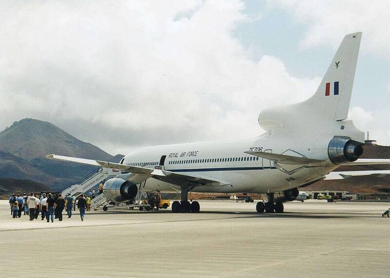

RAF Ascension Island
South Atlantic

A UK and U.S. airfield and tracking station in the middle of the South Atlantic. 1
Open in the interactive Watcher
Sources
- RAF Ascension Island Wikipedia
South Atlantic

A UK and U.S. airfield and tracking station in the middle of the South Atlantic. 1
Open in the interactive Watcher